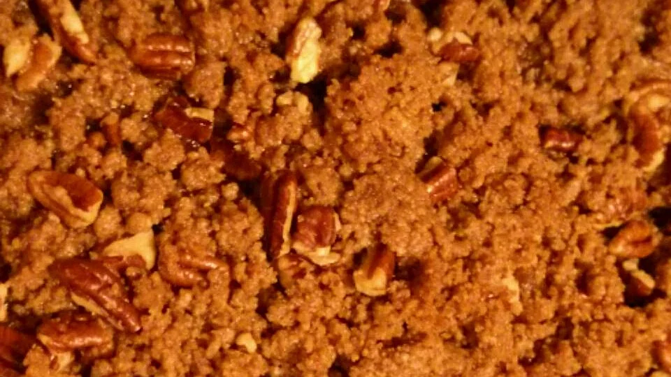

Making Casarole Sliders

Ingredients
- 6 thinly sliced boneless chicken breasts (or cutlets)
- 1 pinch Salt and pepper
- 1 tablespoon olive oil
- 12 slider buns, split
- 1 tomato, thinly sliced
-
1 (8 ounce) package BelGioioso burrata cheese, sliced to include filling
- ½ pound shredded Cheddar cheese
- 1 pint ricotta cheese
Preparation of Lasagna
- Cut chicken breasts in half to fit a slider bun. Season both sides of chicken with salt and pepper. Lightly oil a grill or pan-grill over medium heat. Grill chicken until no longer pink inside, about 5 minutes per side. Set aside.
- Toast buns by grilling them cut-side down. For each sandwich, layer cooked chicken breast, tomato slice, fresh basil leaf, and burrata slice between the toasted slider buns.